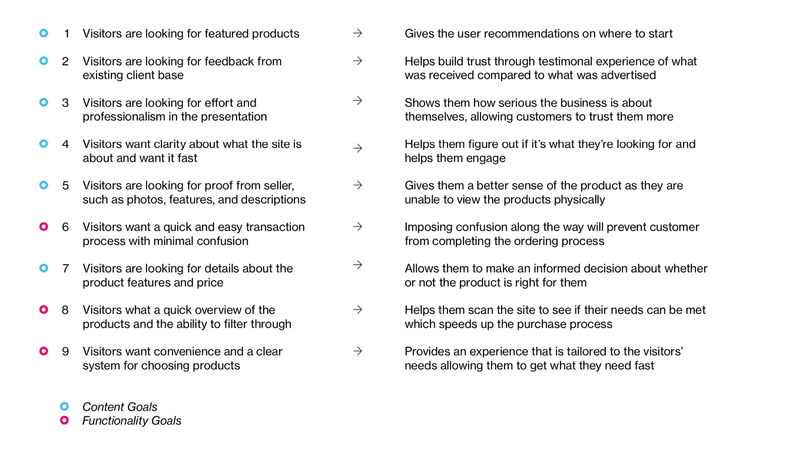
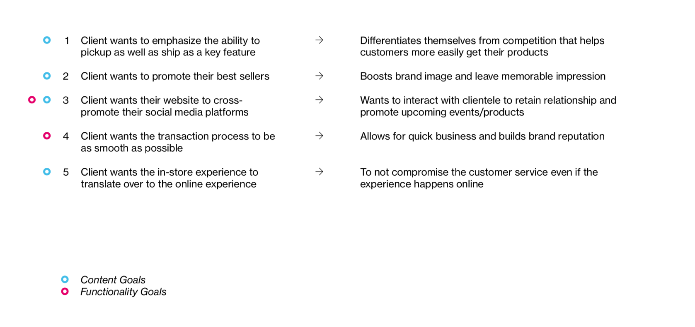
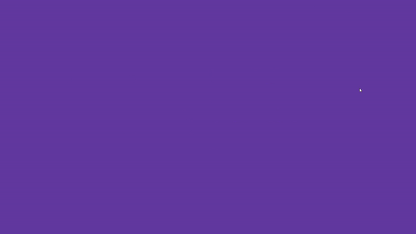
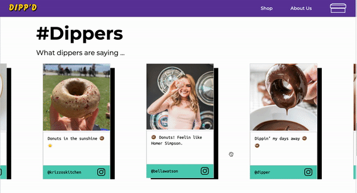
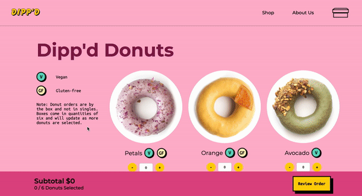
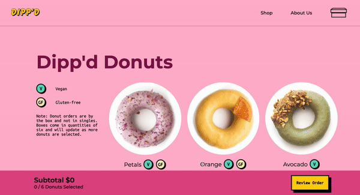
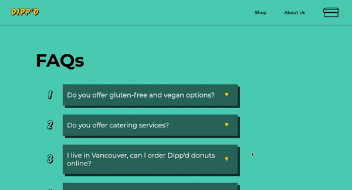

Dipp'd Donuts

About:
Dipp'd is a fictional donut shop based in Toronto, Ontario. Dipp'd is looking to expand their business by allowing online purchases for either delivery or pickup. View the website here.
Role:
Interaction Designer, Copywriter, Front-end Developer
Tools:
Figma, HTML, CSS, Javascript
Team:
David Baik, Jonathan Choi
Duration:
January 2021 - March 2021
Dipp'd: the Brand
The team had to create a fictional client for the project. As the team wanted to explore fun ways to use colour and create a bright concept, Dipp'd was created. Dipp'd is a donut shop located in Toronto, Ontario and specializes in colourful and unique donuts to match the personalities of their clients.
Art Direction
The team created a moodboard to be on the same page in terms of art direction. Images that show the essense of the brand as well as colours that may potentially be used was compiled to make the moodboard. The four key terms that describe this direction and the Dipp'd brand are:
- Visceral
- Distinct
- Eccentric
- Blunt and Bold
Research: Goals of User and Client
The team first started the project by looking at precedent e-commerce sites:
These sites were used to conduct user research to get a sense of what the goals of users and the client would be like.
User-Testing
User-testing was conducted with six individuals ranging from ages of 22 - 50. The user-testing was based on memory retention, CTA clickablility, and the general checkout process. Questions were asked to the individuals in the case they were stuck or they weren't sure how to proceed with the site.
Reflecting the results of the user-testing, the following goals for the client and users were created:
User Goals
Client Goals
Pattern Library
To keep the team on the same page when coding and designing the website, a pattern library was creating to refer back to. Repeated modules, code snippets, the site map, wireframes, and mockups are present in the pattern library. The site map can be viewed here.
Website Interactions
Landing Page
The main interaction on the landing page are the loading screen and the social media post carousel.
Loading Screen
When the user enters the website, they are met with a loading animation. The colours that are seen in the loading animation are related to the colours that are used in the site to categorize different sections. The teal colour for information pages, the pink colour for shopping pages, and the yellow colour for CTA buttons.
Social Media Carousel
From our user research, customer testimonals were very important for the user to trust the website. A social media carousel was created to showcase current clientale. The carousel is activated on drag and the user will be able to view different social media posts that were uploaded by existing clientale.
Shop Page
The main interactions on the shop page are the incremental/decremental buttons, the bottom updater bar, and product hover interaction to show product detail.
Add/Remove Buttons + Updater Bar
The add/remove buttons will add/remove the donut selected to a box. The updater bar at the bottom will reflect how many donuts were added as well as the updated price. The user may choose to easily remove or add donuts depending on their preferences.
Hover to Show Detail
Through user research, it was found that when users decide on buying donuts, they look at only the name of the donut as well as the photo. In the case they have dietary restrictions, they search for symbols. As their decision to purchase a certain type of donut was limited, the team decided to not include separate product pages but utilize the hover interaction to show product details. For mobile, this will be done by tapping onto the product images.
FAQ Page
The FAQ page uses hover interaction to show answers to questions. For mobile, this will be done by tapping onto the question.
Demo Videos
Desktop
Mobile
Reflection
As a designer, it was an eye-opening experience to hand-code a whole e-commerce site for the first time. It is important for designers to know the process from a front-end developer's perspective as it helps with understanding what is feasible and what is not. I am proud of my team and I for straying away from our comfort of using black and white and experimenting with colour. Through this project, I am proud to say that we are not afraid of using colour like we used to be and we now understand the power of colour. I want to also thank David and Jonathan for being the best group mates! We definitely pushed each other to design and code to the best of our abilities and I really look forward to see what we can do in the future.